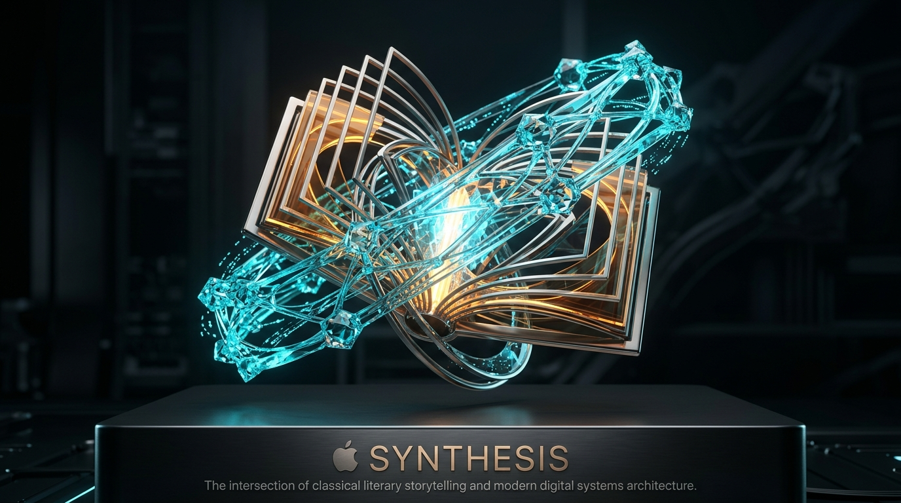

NARRATIVE MEETS SYSTEMS DESIGN
Master’s in Literature. Bachelor’s in Journalism.
Why storytelling and clarity make training stick.
Most training fails because it treats people like machines—downloading facts into passive minds. My background in Literature and Journalism taught me something fundamental: human beings remember what moves them. We make sense of the world through narrative tension, relatable characters, and the emotional resolution of solving real challenges.
Journalistic Clarity
Stripping away corporate fluff to deliver clear, direct, and actionable guidance.
Relatable Stakes
Scenarios that reflect what people actually feel and face in the workplace every day.
Psychological Safety
Designing safe rehearsal environments where making mistakes leads to learning, not fear.
Empathy-Driven Operations
Respecting the learner's time, attention span, and mental well-being in every module.